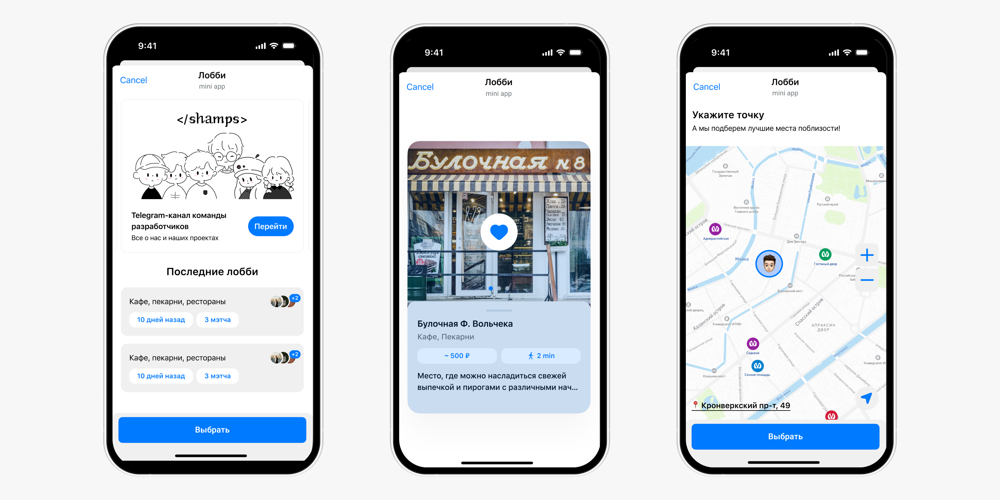
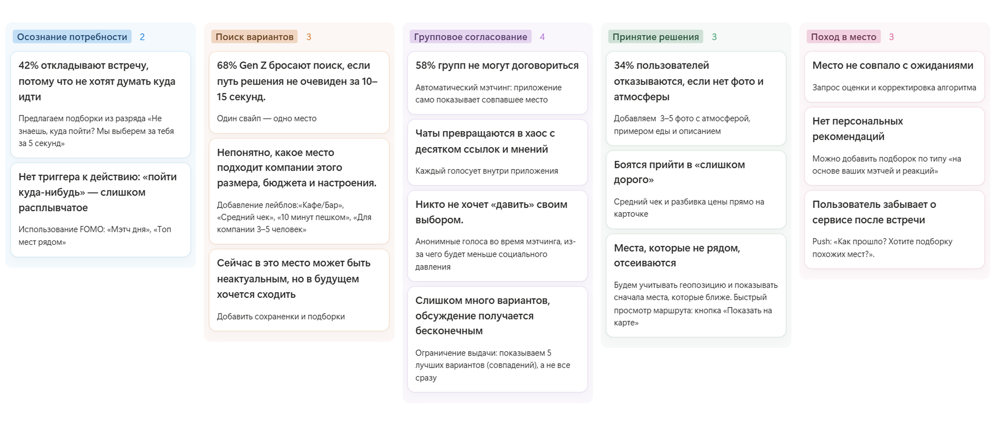
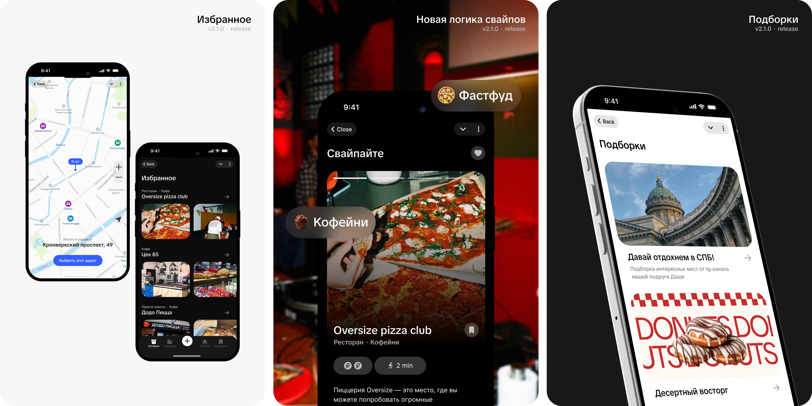
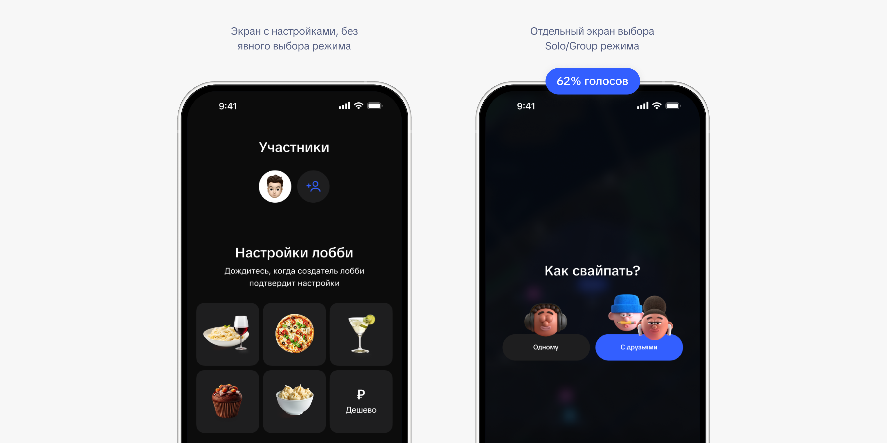
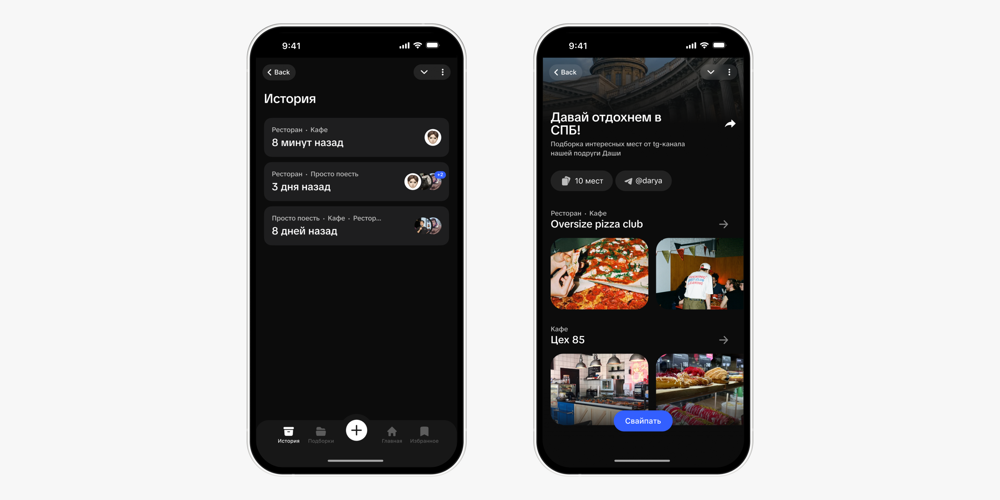

Redesigned a foodtech app for choosing where to eat, together
DishDash helps groups of friends agree on where to go, faster. Instead of endless back-and-forth in group chats, people swipe through venue cards together and land on a place that works for everyone.
Jul 2024 – May 2025
ShampsTech
12% → 48%
1.94K
2.5K+
Live as a Telegram Mini App

Problem
Picking a place as a group is harder than searching alone. People have different preferences, options get buried in the chat and the final call usually goes to whoever is loudest. Map and listing apps help individuals choose but ignore the group scenario.
The goal was to design and launch a service that solves this pain, quickly validate hypotheses with real users, build a visual style that resonates with a young audience and drive organic growth with zero marketing budget.
My role
I owned the post-MVP redesign, including:
- UX audit of the first version
- Audience research and competitive analysis
- Reworked user flows
- Visual identity and tone of voice
- Prototypes and A/B tests
- Developer handoff
- Promo materials and launch across student communities
Challenges
The project launched as a mini startup with no marketing budget, so the product had to hook users from the very first interaction.
The main challenge was shortening the path from discussion to a shared decision. Students and Gen Z are used to lightweight mechanics where one quick action settles things, so the interface had to get the job done fast.
Starting point
DishDash started as a Telegram Mini App. The format helped validate the idea and collect early feedback fast, but testing showed the MVP couldn't carry the next stage of growth. The product lacked its own visual language and the core flows needed serious rework. That became the starting point for the redesign.

UX audit + research
I audited the MVP, interviewed the target audience, mapped the CJM for picking a place as a group and identified the main issues:
- Some users saw DishDash only as a group tool and didn't realize they could use it solo.
- Users got confused by the like/dislike gestures and weren't sure which way to swipe.
- The home screen felt empty and didn't explain what to do next.
- There were no clear actions, and all settings were crammed into one place.
- The map was hard to navigate.
- Liked places got lost because there were no saves or choice history.
Benchmarking
I studied Yandex Maps and 2GIS, the leading local map apps, to see how big players handle collections, recommendations, filters and favorites. They excel at maps, categories and curated lists, but mostly serve solo decisions. The group scenario stays out of focus, and users still end up sending links to friends and discussing options elsewhere.
This confirmed the direction for DishDash: not another venue catalog, but a product for deciding together.

Hypotheses
I framed hypotheses and recorded baseline metrics so we could measure whether the changes worked after the redesign.
If we clearly split Solo and Group modes, users will understand faster that DishDash works for personal picks too, not only for groups.
If we break setup into clear steps and replace the exact-price slider with visual price tiers, more users will reach the venue cards without losing focus.
If we add favorites and swipe history, users will stop losing places they liked and come back more often.
If we add metro stations and a search radius, users will find their way around the map faster and set their search area more precisely.
If friends' likes appear right on the cards while swiping, social proof will make group decisions easier.
If users can create collections and share them with friends, it will boost retention and bring in new users through word of mouth.
If we personalize the home screen with a greeting by name, time of day and stories with updates, users will return more often.
If the visual style feels more alive and closer to a student audience, the product will spread to new users more easily.

Key decisions
1. Split Solo and Group modes
In the MVP, users didn't always realize DishDash works for personal picks, not only for groups.
I moved Solo and Group into a dedicated step to show both use cases upfront and remove confusion at the start.

2. Added saves, history and collections
In the first version, there was no way to save places you liked and come back to them later.
I added saved places, choice history and collections, giving users a reason to return after the first session.

3. Rebuilt the visual style
The product targeted students, so the interface had to both solve the task and hook people from the first tap.
I made the style more vibrant, meme-friendly and less corporate, then carried it across the interface, posters and promo.